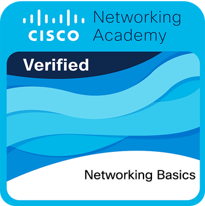
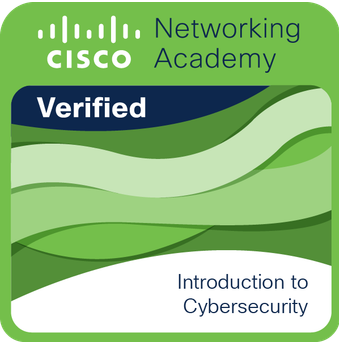
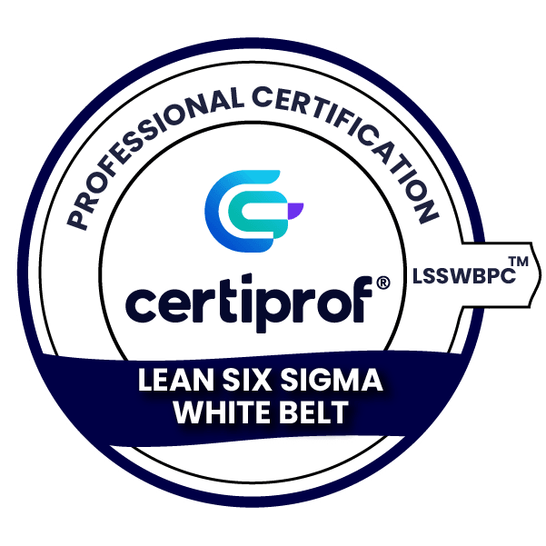
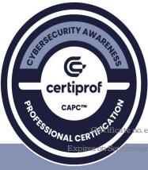

Certificaciones

Networking Basics - Cisco Networking Academy
Estado: Verificado

Cybersecurity Cisco - Cisco Networking Academy
Estado: Verificado
Diplomado auditoria de sistemas de gestion ISO 19011
Estado: Verificado

Lean Six Sigma White Belt
Estado: Verificado

Cybersecurity Awareness - Professional Certification
Estado: Verificado
Servicios Prestados
- Gestion en sistemas operativos
- Asesoría en redes informáticas
- Asesoria y evaluacion de documentacion para proyectos
- Implementación de soluciones IoT
- Optimización de redes para mejora de Internet
- Implementacion de Proyectos Tecnologicos
- Clases Personalizadas, Matematicas, Redes, Innovacion, gestion de proyectos y desarrollo de software.
Mi Canal de YouTube
En mi canal comparto contenido sobre tecnología, Ejercicios, innovación y dirección de proyectos.
Visita mi canal
Estudios Académicos
- Ingeniería de Sistemas - Universidad ECCI
- Maestría en Gerencia de Proyectos - Universidad UNAD
- Especializacion en Gerencia de Proyectos - Universidad UNAD
- Scrum Master/Product Owner - Certiprof
- Lean Six Sigma White - Certiprof UNAD
- Cybersecurity - Certiprof
- Itil/SOC - Exin
- Customer Experience Management - IZO
- Certificaciones en metodologías ágiles y dirección de proyectos
Experiencia Laboral
- Jefe de Proyectos Experiencia Hogar - Claro Colombia (Actualmente)
- Coordinador de Causa Raiz - Claro Colombia
- Coordinador de Mejoramiento - Claro Colombia
- Docente Catedrático Ing. sistemas - Universidad ECCI (Actualmente)
- Docente Catedrático Ing. sistemas - Universidad Catolica
- Consultor en Transformación Digital y Redes Empresariales (Actualmente)
- Desarrollador de Aplicaciones Web y Plataformas Educativas (Actualmente)
- Evaluador de Proyectos TI (Actualmente)